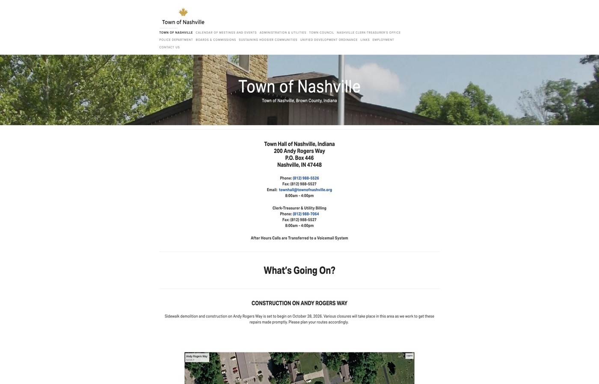

Town of Nashville accessibility assessment
WCAG (Web Content Accessibility Guidelines) 2.1 Level AA review of townofnashville.org, covering keyboard access, focus visibility, colour contrast, navigation, headings and structure, and the public contact form. Findings become prioritised remediation notes for authorised town representatives. This case study documents assessment work only. Live production edits stay with the client.
Scope note: Serve IT does not push changes to the live Squarespace site from this portfolio. Screenshots below are browser evidence from the public site at the time of review.
Evidence from the live site



Concrete findings
-
Colour contrast (nav). Top navigation links render at about
rgb(153, 153, 153)on white at roughly 12px. That pairing is well under the 4.5:1 AA ratio for normal text, so menu labels are hard to read for low-vision users. - Focus visibility. Keyboard focus on sampled links, buttons, and form controls showed no reliable visible outline or focus ring (outline often computed as none). Keyboard-only users cannot tell where they are.
-
Skip link and landmarks. No skip-to-content link was present. Landmark support
was incomplete: navigation exists, but dedicated
main,header, andfooterlandmarks were not detected on the homepage. -
Heading structure. The homepage exposes multiple
h1headings (for example “Town of Nashville”, “What’s Going On?”, “Project Retree”, and the SR 46 notice). Screen-reader users relying on a single page title lose a clear document outline. - Forms. The contact form exposes required name, email, subject, message, and address fields. Most controls have accessible names, but required cues rely on light grey “(required)” text, field borders are very light, and a generic “Click Here …” link sits above the form.
- Hero text over imagery. White page titles over photographic banners can fail contrast where the photo is light (sky or pale stone).
Prioritised remediation notes (proposed)
-
P1 · Focus styles. Add a global
:focus-visiblestyle with at least a 2px solid high-contrast outline (or equivalent box-shadow) on all interactive controls. Do not remove browser focus without a stronger replacement. -
P1 · Navigation contrast. Darken inactive nav text to meet 4.5:1
against white (for example near
#595959or darker). Keep the gold active state only if it still meets contrast. -
P1 · Skip link. Add a visually hidden “Skip to main content” link as
the first focusable control, revealed on focus, targeting a single
mainlandmark. -
P2 · Headings. Keep one
h1per page for the page title; demote section titles toh2/h3in logical order. - P2 · Form clarity. Strengthen label and required-indicator contrast; thicken input borders; replace “Click Here …” with descriptive link text; confirm error messages are programmeatically associated with fields.
- P3 · Hero overlays. Add a dark scrim or text shadow behind white titles so contrast holds across banner frames.
Related Serve IT work: Middle Way House accessibility case study. Fuller scrapbook portfolio: portfolio.pdf.